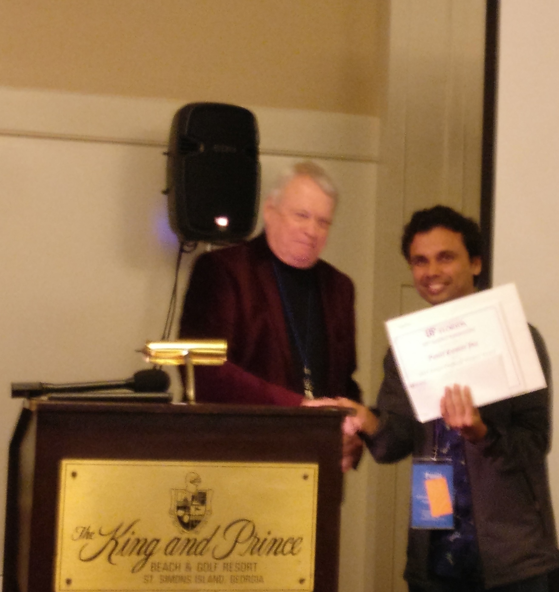

I am a currently a fifth-year Ph.D candidate in Chemistry at the University of Illinois at Urbana-Champaign.
I did my undergraduate and master’s in chemistry at the National Institute of Science Education and Reserach, Bhubaneswar, India. My M.Sc. research project on nuclear magnetic resonance spectroscopy (NMR), and I worked with 2D NMR experiments. For general details on my Ph.D. research and the projects that I have worked on please see the “Projects” section of my website.
You can checkout my Google Scholar profile here for details of my publications and citations.
My full CV can be found here.
Education
University of Illinois at Urbana-Champaign, Urbana-Champaign, IL.
5th Year Ph.D. Candidate, Department of Chemistry, Aug 2016 – Present.
National Institute of Science Education and Research,Bhubaneswar, India.
Integrated Master of Science (M. Sc.), School of Chemical Sciences, Aug 2011 – June 2016.
List of Publications
- S. Hirata and Punit K. Jha, Finite-temperature many-body perturbation theory in the grand canonical ensemble, J. Chem. Phy., 153, 014103, 2020. (arXiv)
- Punit K. Jha and S. Hirata, Finite-temperature many-body perturbation theory in the canonical ensemble, Phys. Rev. E, 101, 022106, 2020.(arXiv)
- S. Hirata and Punit K. Jha, Converging finite-temperature many-body perturbation theory in the grand canonical ensemble that conserves the average number, Annu. Rep. Comput. Chem., 15, 17-37, 2019.(arXiv)
- Punit K. Jha and S. Hirata, Numerical evidence invalidating finite-temperature many-body perturbation theory, Annu. Rep. Comput. Chem., 15, 3-15, 2019.(arXiv)
Presentations
- “Numerical Evidence Invalidating Finite-Temperature Many-Body Perturbation Theory”, 59th Sanibel Symposium, 2019, talk.
- “Advancing Moore’s Law Through Multi-Gated Transistors”, Physical Chemistry Lit. Seminars, at the Department of Chemistry, UIUC, 2017, talk.
- “Research at the School of Chemical Sciences, NISER, Bhubaneswar”, Inauguration Day of new NISER campus by the Honorable Prime Minister of India Shree Narendra Modi, 2016, poster.
- How does Magnetic Resonance Imaging Work?, Departmental Seminar of the School of Chemical Sciences, NISER, Bhubaneswar , 2015, talk.
- “Diagonal Suppressed Correlation Spectroscopy (COSY)”, M. Sc. research presentation in the 7th, 8th, 9th and 10th semesters at Departmental Seminar of the School of Chemical Sciences, NISER, Bhubaneswar, 2015-16, talk.
Courses Taken
Here is list of relevant courses that I have done at the University of Illinois and NISER, India.
- ECE 365: Data Science & Eng.
- CS 420: Parallel Programming
- CS 446: Machine Learning: Theory (Ongoing)
- CS 447: Natural Language Processing (Ongoing)
- CS 498: Intro. to Deep Learning (Ongoing)
- Data Mining Specialization - UIUC Coursera (Ongoing)
- Cloud Computing Specialization - UIUC Coursera (Ongoing)
- Machine Learning by Andrew Ng (Coursera)
- CS 400: Data Structures in C++ - UIUC Coursera.
- Quantum Mech. & Spectrosc.
- Molecular Electronic Structure
- Quantum Mechanics
- Statistical Thermodynamics
- Probability Theory
- Algebra - II
- Computational Physics
- Biophysics and Statistics
- Numerical Methods in C++
- Classical Mechanics- I
- Nuclear Magnetic Resonance Theory
- Physical methods in Chemistry I & II
- Organic chemistry- I & II
- Quantum Chemistry- I & II
- Introduction to Economics
- Sociology
- History of Science
Courses Taught
- Fall 2016, CHEM 445/447 - Physical Principles Lab
- Responsibilities included conducting the FTIR lab experiment and grading lab reports.
- Fall 2016, CHEM 440 - Physical Chemistry Principles
- Responsibilities included holding office hours, conducting exams and grading.
- Spring 2017, CHEM 104 - General Chemistry II
- Responsibilities included teaching, holding office hours, conducting exams and grading.
- Fall 2017, CHEM 440 - Physical Chemistry Principles
- Responsibilities included holding office hours, conducting exams and grading.
- Spring 2018, CHEM 445/447 - Physical Principles Lab
- Responsibilities included conducting the FTIR and XRD lab experiments and grading lab reports.
Honors and Awards
- 2019, CATMS Travel Award by the Department of Chemistry, UIUC.
- 2019, Drickamer Research Fellowship by the Department of Chemistry, UIUC.
- 2019, IBM-Zerner Graduate Student Award by the University of Florida at the 59th Sanibel Symposium.
- 2018, J. C. Martin Memorial Student Travel Award by the Department of Chemistry, UIUC.
- 2017, Sloan Chemical Prize by the Department of Chemistry, UIUC.
- 2016, Hannum Fellowship by the Department of Chemistry, UIUC.
- 2016, Virginia Bartow Scholarship for admission to Department of Chemistry, UIUC.
- 2016, Dornsife Fellowship for admission to Department of Chemistry, University of Southern California.
- 2016, Saryu Doshi Post Graduate Fellowships in Liberal Arts & Sciences by the Saryu Doshi Foundation for excellent academic performance in my M. Sc thesis.
- 2014, MITACS Globalink Scholarship for undergoing summer research internship at the University of Calgary, Alberta, Canada.
- 2013, Academic Excellence Award for securing the highest S.G.P.A of 9.92/10 in the 4th semester at NISER, Bhubaneswar, India.
- 2011, Innovation in Science Pursuit for Inspired Research (INSPIRE)- 2011 scholarship by the Department of Science and Technology, Government of India for securing an All India Rank of 109 out of 50,000 candidates in the National Entrance Screening Test.
- Ranked as one of the top 3% students in the All India Biology Olympiad. (out of 8500 students)
Computational Skills
- Programming Languages
- C++, Python, FORTRAN, Mathematica, GNU Octave, Shell, TopSpin, LaTeX, Matlab.
- Software Packages
- PSI-4, PySCF, Gaussian, Gensim, spaCY, Scikit-Learn.
- Microsoft Word
- Excel, Outlook, PowerPoint, Word